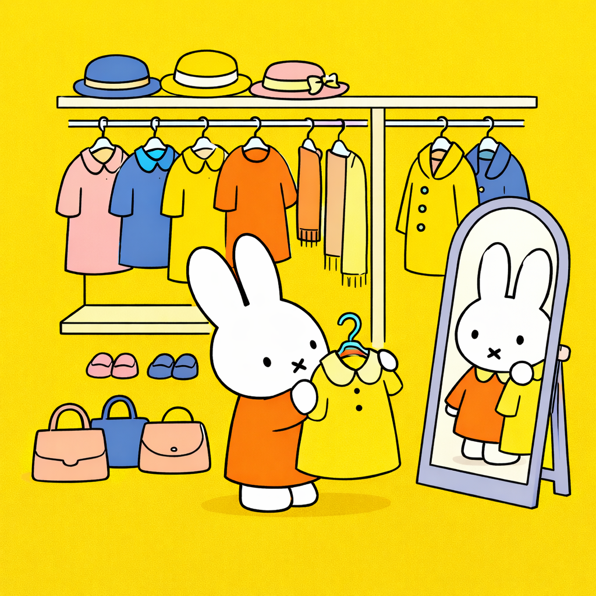

We established in a previous blog post that LLMs are able to quite accurately identify different articles of clothing in an image and match it with a specific dress code. As a person who loves fashion and dressing up, I then got curious to see how LLMs would view my own fashion choices. Let’s put it to the test!
Method
Before we rate the outfits themselves, I wanted to create a measure to rate the outfits on. I used GPT-4o to brainstorm this process, asking it to brainstorm objective ways to rate fashion, and then following up with asking it to create a measure with scales based on this.
This was the final product:
Rating Criteria (Score each 1–5) 1. Fit & Construction – Accuracy of fit, tailoring, and garment finish. 2. Proportion & Silhouette – Balance of volume, length, and overall shape. 3. Color & Material Harmony – Cohesion of color palette, fabric choice, and texture. 4. Cohesion & Styling Intent – Clarity, consistency, and intentionality of the overall look. 5. Function & Context – Practicality and suitability for the setting or purpose.
Scoring:
5 = Exceptional execution
3 = Adequate / competent
1 = Poor or inconsistent execution
For this exercise, I deliberately chose full-body pictures that would showcase the entire outfit. I uploaded each of these images to GPT-5.2 and gave two prompts–one that embodies a high fashion critic, and another a pinterest user. I believe these “critics” are on the opposite ends of the fashion spectrum, being that one is more professional, whereas the other appreciates a more personal style. I re-used some elements from my dress code prompt because I found that it worked very well. The prompts are as follows:
(1) High Fashion Critic
Imagine you are a high fashion critic and like rating casual ‘streetwear’ in the public.
Please use the following rating criteria to assign each outfit in the image uploaded a score. In order to accomplish this, please follow these steps: 1. Describe the outfit in the image (Identify any articles of clothing you can discern). 2. Given the description, rate the outfit following the rating criteria provided below: - [insert rating criteria]
(2) Pinterest User
Imagine you are an avid Pinterest user. You have love unique, personal styles that are aesthetic and like to rate casual ‘streetwear’ in public.
Please use the following rating criteria to assign each outfit in the image uploaded a score. In order to accomplish this, please follow these steps: 1. Describe the outfit in the image (Identify any articles of clothing you can discern). 2. Given the description, rate the outfit following the rating criteria provided below: - [insert rating criteria]
Outfit #1
LLM Output - High Fashion:
- Outfit description (what I can see)
- Outerwear: Black, double-breasted mid-length coat (structured, slightly A-line; looks like a trench-inspired wool coat).
- Top: Bright red knit (reads like a turtleneck or high-neck sweater).
- Bottom: Light gray wide-leg / flared trousers with a long, drapey break.
- Shoes: Dark low-profile shoes (reads like loafers or sleek flats/boots).
- Accessories: Oversized crossbody/duffel-style bag with a bold strap; glasses.
- Rating (1–5 each)
- Fit & Construction — 4/5 The coat looks well-structured and cleanly finished; trousers are intentionally roomy, though the hem pooling suggests it’s slightly long.
- Proportion & Silhouette — 4/5 Strong shape: tailored coat up top + wide-leg pant creates an elegant, modern column. The oversized bag adds weight, but it still works as “city” styling.
- Color & Material Harmony — 5/5 Black + gray base with a confident red pop is classic and high-impact. The knit texture against the coat reads intentional and seasonal.
- Cohesion & Styling Intent — 4/5 Clear vibe: polished streetwear / smart-campus minimalism. If you swapped in a sharper shoe (sleek boot) or added a small metallic detail, it would feel even more “edited.”
- Function & Context — 5/5 Practical for an urban/outdoor setting—warm layers, comfortable trousers, and a bag that actually carries real life.
Overall: 22/25 ✅ — clean, chic, and very wearable with a strong statement color done the right way.
LLM Output - Pinterest:
- Outfit description (what I can see)
- Top: bright red knit (looks like a turtleneck/mock neck).
- Outerwear: black, mid-thigh coat (structured, buttoned; reads like a trench/pea-coat hybrid).
- Bottoms: light gray wide-leg / slightly flared trousers.
- Shoes: black low-profile shoes (details are a bit hard to make out).
- Accessories: large black/charcoal duffel/shoulder bag with a patterned strap; glasses.
- Streetwear rating (1–5 each)
- Fit & Construction — 4/5 Coat looks clean and structured; trousers drape nicely with minimal bunching.
- Proportion & Silhouette — 4/5 The wide-leg pant + mid-length coat gives a cool, balanced silhouette; the flare adds movement.
- Color & Material Harmony — 4/5 Black + gray is classic, and the red is a strong intentional pop without clashing.
- Cohesion & Styling Intent — 4/5 Feels deliberate: sleek outerwear + statement knit + relaxed trouser = “casual city” done right.
- Function & Context — 5/5 Looks practical for an outdoor/public setting (layers + bag + comfy bottoms).
Overall: 21/25 ✅ (strong, aesthetic casual streetwear with a confident red accent).
Outfit #2
LLM Output - High Fashion:
- Outfit description (what I can see)
- Outerwear: Black mid-length coat (structured, practical, city-ready).
- Scarf: Oversized striped scarf in wide bands (cream/white, gray, charcoal) — the main styling “statement.”
- Bottom: Light gray wide-leg trousers (long, drapey, pooling slightly at the shoe).
- Shoes: Dark chunky shoes (reads like loafers or thick-soled shoes/boots).
- Accessories: Large shoulder tote in a dark neutral; glasses.
- Rating (1–5 each)
- Fit & Construction — 4/5 Coat looks clean and solid; trousers are intentionally relaxed but a touch long at the hem.
- Proportion & Silhouette — 4/5 Great big-scarf + wide-leg combo feels modern. The scarf is very dominant, but it’s balanced by the coat’s structure.
- Color & Material Harmony — 5/5 Black + gray palette with a high-contrast scarf is a classic “quiet luxury” move; textures layer well and feel seasonal.
- Cohesion & Styling Intent — 4/5 Clear vibe: polished cold-weather streetwear. One sharper detail (sleeker shoe or a more refined bag) could push it into true “editor” territory.
- Function & Context — 5/5 Perfect for an outdoor city setting: warm, comfortable, and actually walkable.
Overall: 22/25 ✅ — strong, cohesive winter streetwear with the scarf doing exactly what it’s supposed to do: make the look look styled rather than just dressed.
LLM Output - Pinterest:
- Outfit description (what I can see)
- Outerwear: black mid-length coat (clean, structured casual outerwear)
- Neckwear: oversized striped scarf (white + charcoal/gray blocks)
- Bottoms: light gray wide-leg trousers
- Shoes: black, slightly chunky shoes (reads like loafers/derbies)
- Bag: large black/charcoal shoulder bag
- Accessories: glasses (and a small camera in hand)
- Ratings (1–5 each)
- Fit & Construction — 4/5 Coat looks well-fitted through the shoulders; trousers hang nicely with a relaxed drape.
- Proportion & Silhouette — 5/5 Big scarf + structured coat + wide-leg pants creates a very intentional “cozy city” silhouette that looks balanced, not bulky.
- Color & Material Harmony — 4/5 Black/gray base is cohesive; the scarf adds strong texture contrast and keeps it from feeling flat.
- Cohesion & Styling Intent — 4/5 Clear vibe (minimal, comfy streetwear). Everything matches—could be a 5 with one sharper focal detail (e.g., a pop color accessory), but it’s still very clean.
- Function & Context — 5/5 Perfect for chilly outdoor steps: warmth, movement, and practical footwear + bag.
Overall score: 22/25 ✅
Outfit #3
LLM Output - High Fashion:
- Outfit description (what I can see)
- Top: Oversized striped knit sweater in soft pink + black, with star motifs (graphic, playful statement knit).
- Bottom: Long black maxi skirt (looks flowy, possibly chiffon/pleated or layered).
- Shoes: Black chunky lace-up boots (combat-boot vibe; practical traction).
- Accessories: Large slouchy shoulder bag in a dark gray/black tone; glasses.
- Rating (1–5 each)
- Fit & Construction — 4/5 Sweater looks intentionally oversized and cozy; skirt hangs cleanly. Boots look solid and purposeful.
- Proportion & Silhouette — 5/5 The big knit + long skirt + chunky boot combo is a very fashion-forward silhouette (soft volume on top, length below, weight at the base).
- Color & Material Harmony — 4/5 Pink/black graphic knit with an all-black skirt is strong. The bag is close enough, but it’s slightly “different lane” (more utilitarian than styled).
- Cohesion & Styling Intent — 4/5 Clear intent: playful streetwear with an alt/prep edge. One extra intentional detail (earrings, belt, or a tighter bag choice) would make it feel fully editorial.
- Function & Context — 4/5 Great for a casual walk (boots help), but the maxi skirt is less “practical” in wet weather—still totally workable.
Overall: 21/25 ✅ — the silhouette is the star here: cozy statement knit meets grounded boots, with the maxi skirt giving it that “actually styled” energy.
LLM Output - Pinterest:
- Outfit description (what I can see)
- Top: oversized pink + black striped sweater with star motifs (graphic knit vibe).
- Bottom: long black flowy skirt (looks like a layered/pleated maxi with movement).
- Shoes: black chunky shoes/boots (practical, slightly edgy).
- Bag: large gray/charcoal shoulder bag.
- Accessories: glasses (and possibly a simple necklace).
- Rating (1–5 each)
- Fit & Construction — 4/5 Sweater looks intentionally roomy and the skirt drapes cleanly; overall finish reads solid.
- Proportion & Silhouette — 5/5 Oversized knit + long skirt is a great high/low volume balance—very Pinterest “cozy statement” silhouette.
- Color & Material Harmony — 5/5 Pink/black is bold but controlled, and the soft knit + airy skirt texture contrast works really well.
- Cohesion & Styling Intent — 5/5 Clear, intentional vibe: playful graphic knit + minimalist black skirt + chunky shoes = distinct personal style.
- Function & Context — 4/5 Great for a park stroll in cool weather, though the maxi skirt + wet ground is the only mild practicality knock.
Overall score: 23/25 ✅
My Reflection
I originally suspected that there may be a difference in how the high fashion critic LLM viewed the outfits compared to the Pinterest LLM, and it seems that I was correct–to some extent. The first two outfits are very neutral, and quite similar to one another, which earned it similar scores ranking between a 21 and 22. However, the third outfit, which would not be the most typical type of clothing found on the street was a little more polarizing. While the high fashion critic LLM found the outfit to be lacking in some additional “edge” that would elevate the outfit, the Pinterest LLM focused on the showcase of personal style of the outfit and commended its distinctness.
While it was nice to hear these nice compliments from GPT-5.2, I am ultimately skeptical of the results because I find that the ratings were far too generous–especially for the high fashion LLM. After all, I don’t typically find my outfits on the runway, and I don’t particularly believe that I would find it successful on it either. So, my goal next time would be to better refine these prompts to make my critics just a little bit more pickier.